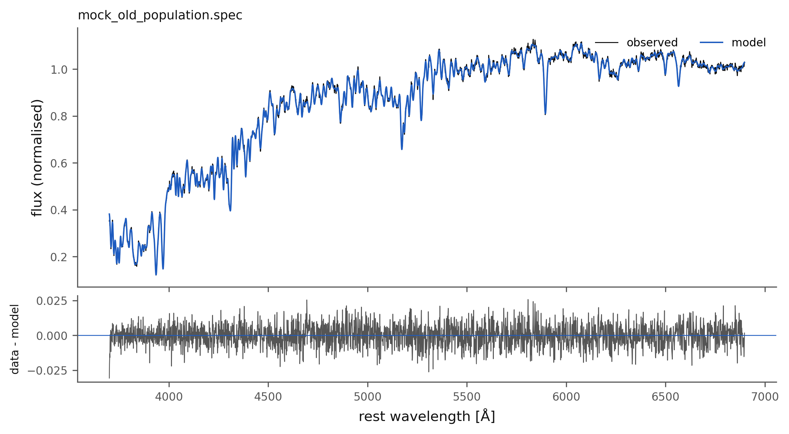
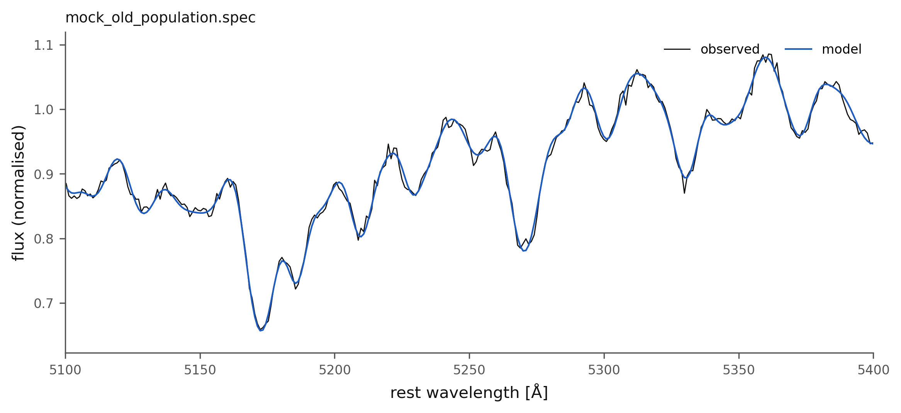
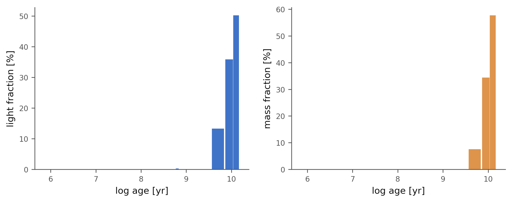

1. A first fit#
The mock spectrum mock_old_population.spec was built from three old,
metal-rich BasesGM templates (12.6 Gyr and 5 Gyr at \(Z = 0.019\), 8.9 Gyr at
\(Z = 0.0315\)), behind \(A_V = 0.2\) mag of dust, with the stars moving at
\(v_\star = 150\) km/s and \(\sigma_\star = 200\) km/s, at signal-to-noise 100.
BRAIN is told none of that.
"""Tutorial 1: a first fit."""
import json
import brainsp
# 1. The mock data used throughout the tutorials: five spectra and a
# 16 x 16 datacube, each with the true values it was built from.
folder = brainsp.mock.write_examples("examples")
spectrum = f"{folder}/spectra/mock_old_population.spec"
# 2. Fit it with BRAIN's default settings.
result = brainsp.fit_spectrum(spectrum, output_dir="fits", quiet=True)
print(result)
# 3. The numbers.
print(f"stellar velocity v0 = {result.v0:8.2f} km/s")
print(f"velocity dispersion sigma = {result.sigma:8.2f} km/s (observed)")
print(f"extinction A_V = {result.av:8.3f} mag")
print(f"<log age>_L = {result.mean_log_age_light:8.3f}")
print(f"<log age>_M = {result.mean_log_age_mass:8.3f}")
print(f"<Z>_L = {result.mean_metallicity_light:8.4f}")
print(f"chi2 / N_eff = {result.chi2:8.3f}")
# 4. Against the truth the mock was built from.
truth = json.load(open(spectrum.replace(".spec", ".truth.json")))
print("\ntruth: v0 = {v}, sigma = {sigma}, A_V = {av}, <log age>_L = "
"{mean_log_age_light:.3f}".format(**truth))
# 5. The population vector: the templates that carry light.
p = result.populations
used = p[p["x"] > 0.5]
print("\n x_j(%) mass_j(%) age (yr) Z")
for row in used:
print(f" {row['x']:6.2f} {row['mcor']:8.2f} {row['age']:10.3g} "
f"{row['Z']:.4f}")
# 6. Figures.
brainsp.plots.spectrum(result, "t01_spectrum.png")
brainsp.plots.spectrum(result, "t01_zoom.png", xlim=(5100, 5400),
residuals=False)
brainsp.plots.sfh(result, "t01_sfh.png")
print("\nfiles:", result.summary_file, result.fitted_file, sep="\n ")
Output:
Plot saved to fits/mock_old_population_fit.pdf
<FitResult mock_old_population.spec: v0=149.02 km/s, sigma=201.38 km/s, AV=0.2073, chi2=0.665296>
stellar velocity v0 = 149.02 km/s
velocity dispersion sigma = 201.38 km/s (observed)
extinction A_V = 0.207 mag
<log age>_L = 9.988
<log age>_M = 10.017
<Z>_L = 0.0221
chi2 / N_eff = 0.665
truth: v0 = 150.0, sigma = 200.0, A_V = 0.2, <log age>_L = 9.983
x_j(%) mass_j(%) age (yr) Z
9.20 5.03 5.01e+09 0.0190
15.90 14.23 8.91e+09 0.0190
50.30 57.78 1.26e+10 0.0190
4.20 2.63 5.01e+09 0.0315
20.04 20.28 8.91e+09 0.0315
files:
fits/mock_old_population_summary.txt
fits/mock_old_population_fitted.txt
Reading the result#
brainsp.fit_spectrum() returns a FitResult. Its
headline numbers came back within 1.0 km/s, 1.4 km/s and 0.007 mag of the
truth.
v0andsigmaare the stellar velocity and velocity dispersion. The dispersion is observed: it includes the instrument and the library’s own resolution difference unlessinstrumental_resolutionis set (see Instrumental resolution). The mock was built from the same templates BRAIN fits it with, so here there is no difference to remove.avis the V-band extinction, with the CCM law (reddening_law).mean_log_age_lightis \(\langle \log t \rangle_L = \sum_j x_j \log t_j / \sum_j x_j\) over the stellar populations, the light-weighted mean of the logarithm of the age (not the logarithm of the mean age); see Derived quantities.chi2is \(\chi^2 / N_{\rm eff}\). It comes out near 0.65 rather than 1 because the mock’s error column is sampled on a 1 Å grid and BRAIN resamples onto its logarithmic grid, which averages neighbouring noise.
The population vector#
r.populations is a NumPy structured array, one row per template: x
(light fraction, per cent, at 5500 Å), mini and mcor (initial and
present mass fractions, per cent), age, Z, mstars, name, and
stellar (False for an AGN component). Only five of the 84 templates carry
light: the non-negative least-squares solution is sparse, which is expected
and correct, not a failure to converge.
The fit splits the light between the true populations and their neighbours in age and metallicity: the 12.6 Gyr and 8.9 Gyr templates, at both metallicities. That is the age-metallicity degeneracy at work. Quantities that average over the population vector, like \(\langle \log t \rangle_L\) (10.00 against a true 9.98), are far more robust than any single \(x_j\). Report averages, or sums over age bins, not individual components.
Figures#
brainsp.plots.spectrum() draws the data and the model, with the
residuals underneath:

xlim= zooms; this is the Mg b and Fe region:

brainsp.plots.sfh() draws the star-formation history, the light and
mass fractions in each age summed over metallicity:

The fit also wrote fits/mock_old_population_summary.txt (the numbers), _fitted.txt (the spectra, column by column),
_settings.txt (every setting used) and _fit.pdf (the standard figure).
Output files describes every line of them.